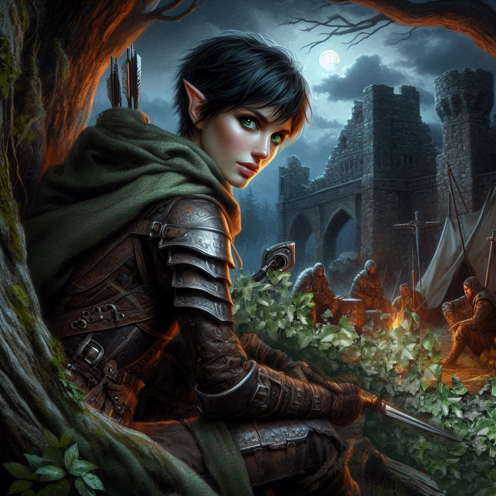

The Mercenary Camp
The cool night air carries the faint scent of pine as you and the mysterious ranger, who still hasn’t told you her real name, move silently through the woods. The herbs she applied to your wound helped, but your leg still aches with every step. You glance over at her, wondering if you’ve made the right choice by letting her tag along. Trusting others has never been your strong suit, especially now, with everything on the line. But something about this ranger—no, something about her—draws you in.
You shake your head, trying to focus. The trail you’re following is fresh. Broken branches, disturbed soil, boot prints—too many boot prints. Mercenaries, no doubt. They’re headed for the old ruins near Hemlock Falls, and if your suspicions are right, Jorsh is there, too.
The thought of him sends a strange wave of emotion through you. The Jorsh you remember—laughing, carefree—feels like a lifetime ago. Now, he’s a rogue sorcerer, and you’ve been sent to bring him in. Dead or alive.
"Are you sure we’re going the right way?" the ranger asks, her voice a soft whisper in the dark.
You nod, crouching to inspect a footprint in the dirt. "They’ve been moving fast, but they’re not trying to cover their tracks. They must think no one’s close enough to follow."
The ranger tilts her head, watching you closely. "You’re good at this."
You grunt in response, keeping your eyes on the trail. Compliments make you uneasy, especially from someone whose trust you haven’t earned. But you can’t deny that you’re grateful she’s here. Your leg still throbs, and without her, you’d be much worse off.
A short while later, the trees thin out, revealing the crumbling stone ruins ahead. The mercenaries are here—you can hear their muffled voices carried by the wind. Your heart beats faster. Somewhere in that ruin, Jorsh could be waiting.
As you creep closer, the ranger places a hand on your arm. "There’s too many of them to fight head-on. We should wait until they’re asleep."
You narrow your eyes, scanning the ruin. She’s right, but time isn’t on your side. If Jorsh is with them, he could slip away before dawn. Every moment you hesitate could cost you your mission. And yet, charging in could get you both killed.
The ranger’s gaze is fixed on you, waiting for your decision.
"Fine," you whisper. "We wait."
You both settle into the shadows, watching as the mercenaries move about their camp. It’s clear they’re not expecting an ambush. Some are already sitting around a fire, laughing and passing a flask between them. Their weapons are close, but their guard is down.
"You’re after someone," the ranger says quietly, her tone more curious than accusing. "Someone in that ruin."
You tense up. How much should you tell her? You can feel her eyes on you, sharp and assessing, and it’s getting harder to keep your walls up. But before you can respond, movement near the entrance of the ruin catches your attention.
Your heart skips a beat. Jorsh.
He steps into the firelight, his dark cloak swirling around him, his eyes colder than you remember. But it’s him. The boy you once knew, now a man consumed by ambition. Your throat tightens as old feelings rush to the surface—love, hurt, betrayal. You were tasked to bring him to justice, but seeing him again makes everything more complicated.
"There he is," you murmur under your breath.
The ranger follows your gaze. "That’s him, isn’t it? The one you’re after."
You nod, your hand tightening around the handle of your bow. "Jorsh." You draw an arrow.
The ranger watches you closely, her expression unreadable. "You’re not going to kill him, are you?"
You don’t answer. You can’t. Not when your own heart doesn’t know the answer.
As you prepare to move in, the wind shifts, carrying your scent toward the camp. Jorsh has apparently set up some kind of magical intrusion detection system. An ephemeral sentry materializes and floats in the air between you and the campfire, his ghost-like visage staring directly at you as he calls out in an eerie hollow voice, "Intruder! Stop where you are. If you make any sudden moves, you will be shot by our archers!"
One of the real mercenaries sitting around the campfire stands and draws his sword. His eyes lock onto your hiding spot. Before you can react, he shouts, "The wizard’s alarm! Intruders!"
The camp erupts into chaos. Mercenaries scramble for their weapons, and in an instant, you’re surrounded. Thankfully, the threat of archers was an empty ruse. But the wall of swords around you gives reason to quickly forget your fear of arrows. Blades flash in the firelight, and you barely have time to draw your sword before the first mercenary lunges at you.
You parry his strike, the force of it sending a jolt of pain through your injured leg. But you grit your teeth and push forward, slashing at him and forcing him back. The ranger is beside you, her movements swift and deadly as she cuts down two mercenaries in quick succession.
But then, out of the corner of your eye, you see her falter. A mercenary breaks through her defenses, swinging his axe toward her unguarded side. Without thinking, you throw yourself between them, blocking the strike with your sword. The impact nearly knocks the blade from your hands, but you hold firm, driving the mercenary back.
The ranger looks at you, surprise flickering across her face. "Why did you—"
You don’t let her finish. "We need to move!" you shout, pulling her toward the cover of a nearby boulder. More mercenaries close in, and you know there’s no way you can win this fight. Not like this.
Your eyes dart toward the ruin, where Jorsh has disappeared back inside. You could go after him now, finish this once and for all. But with the mercenaries pressing in and the ranger wounded, leaving her behind feels like a betrayal of its own.
Then you hear it. Something between a chant and a song. The mercenaries stop their advance as their swords droop toward the earth. All eyes, including yours, are on the other ranger. She holds an ancient piece of parchment up to the moonlight and sings the runes that light up in succession across the surface of the scroll. She’s not just a ranger! She is a magic user!
The air sparkles like a thousand miniscule lightning bugs as the ranger sings. Suddenly, the mercenaries drop their weapons, close their eyes, and slump to the ground sound asleep. You are dazed and sleepy, fighting to keep your eyes open as the ranger sings on. When you fall to your knees, she stops and tucks the scroll back into her satchel. She helps you to your feet and slaps you across the face.
Jolted, you stumble backward and look around in shock. "Why’d you hit me?" You rub your cheek as you regain your balance.
"A good smack usually blocks the sleep spell," the ranger says with a smile. "Now help me tie these Trade Ministry thugs up before they wake up!"
After they are all bound and gagged, you grab the ranger by the shoulders and look into her beautiful iridescent eyes. "You’re no ranger," you say. She looks at your mouth seductively.
"No," she confesses. She leans in, her lips less than an inch from your lips. "But you’re not just a ranger, either. Are you?"
“What do you mean?” you ask, your heart racing as she places her hands on your hips. Her lips brush against your cheek, causing shivers up your spine. You close your eyes. She’s a magic user. Is she using another spell against you now? An enchantment spell perhaps?
“You are Kira Coldspring, the half-elf raised by Baider the half-orc. Your father was an elven warrior. Your mother a beautiful human woman. Both of them lost from history without any explanation.”
“Why do you know this?” you ask, your breath catching in your throat as her lips touch your ear. Her breath is warm on your neck.
“It is my duty to know who my subjects are,” the ranger says. “Especially those with unique talents or ties to the hidden magic of my kingdom.” She kisses your neck gently.
You pull away. “You're using an enchantment spell on me!”
“You want to help me,” she says. “Not because I’m using magic. You want to help me because we share a mutual attraction. Because we are two powerful women attracted to beauty and strength.” She pulls you back toward her.
You want her embrace. You want to please her. Your epiphany hits you like Baider’s war hammer. This is no ranger. She is no mere magic user. This is Princess Hawthorn, the heir to the throne of Yew. She has been playing you. And for some reason, you don’t seem to mind. You stare into her eyes. You look longingly at her lips. “You’re so beautiful,” you say, feeling like a love-struck child.
“You want to help me, don’t you?” Princess Hawthorn bats her eyes very slowly at you as she squeezes your hips and pulls you in even closer.